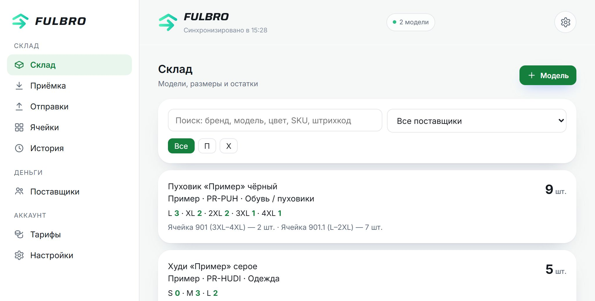
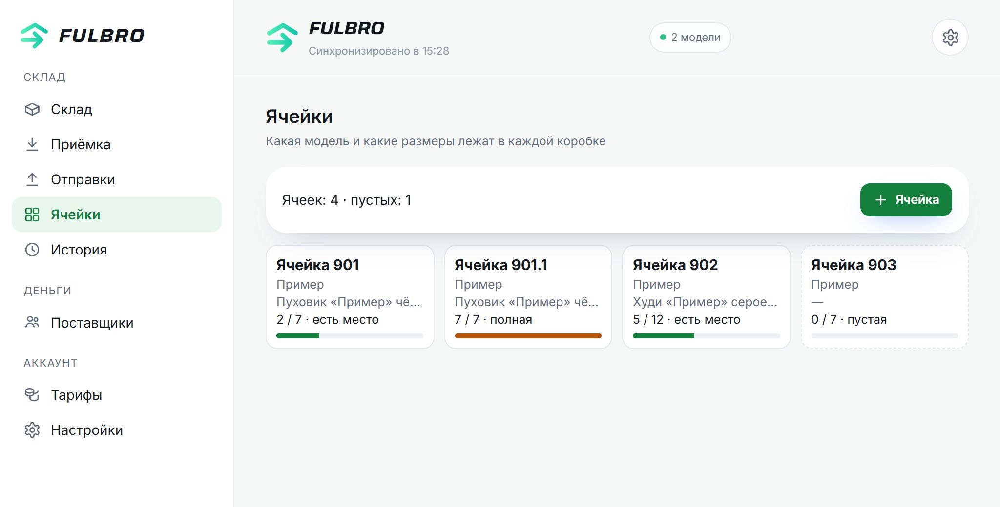
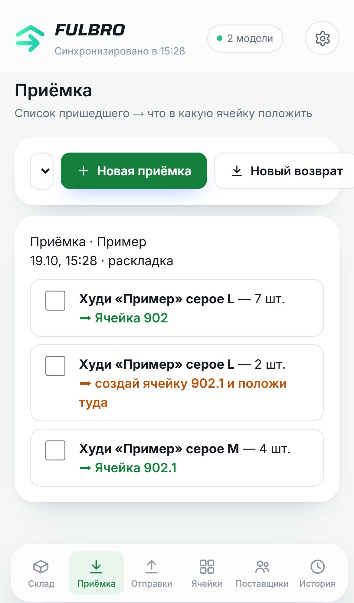
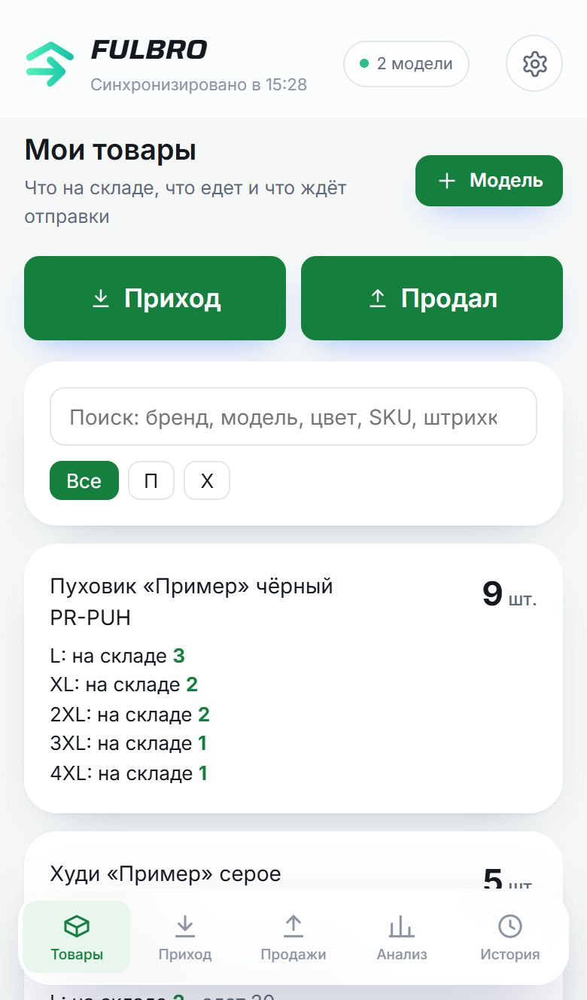

Фулфилмент без хаоса — склад, поставщики и заказы в одном окне
Fulbro подсказывает, в какую ячейку положить товар и откуда его взять, а поставщики сами вносят приход и продажи с Авито. Остатки у склада и поставщика всегда совпадают.
Без карты · Телефон и компьютер · Работает без интернета

Склад растёт, а учёт живёт в чатах и Excel
Поставщики шлют заказы в Telegram: скриншот штрихкода Авито, фото товара, внизу подпись «2 шт., 3500». Сообщения тонут в переписке, размеры путаются — и уходит не тот товар.
Остатки — в таблице или в голове кладовщика. Каждый день кто-то спрашивает «а сколько у меня осталось L?», и чтобы ответить, надо идти на склад и пересчитывать.
Новый сотрудник не знает, где что лежит. Приехала поставка — «везли 50, пришло 48», и доказать нечем. А в конце месяца счёт поставщику собирается по памяти.
Чаты и Excel против Fulbro
Что меняется, когда учёт склада и поставщиков в одной программе.
| Чаты + Excel | Fulbro | |
|---|---|---|
| Заказы от поставщиков | ✕теряются в переписке | ✓готовое задание со штрихкодом |
| Остатки у поставщика | ✕«спросите у склада» | ✓онлайн, без звонков |
| Где лежит товар | ✕по памяти | ✓ячейка подсказывается |
| Приёмка с пересчётом | ✕спор «везли 50 — пришло 48» | ✓расхождение видно обоим |
| Брак и возвраты | ✕лежат вперемешку | ✓отдельная ячейка брака |
| Без интернета | ✕таблица не открылась | ✓всё сохранится и уйдёт само |
Всё для фулфилмента — в одном сервисе
Учёт склада, ячеек и поставщиков: один вход на телефоне и компьютере вместо чатов, тетрадей и таблиц.
Адресное хранение по ячейкам
Одна модель — одна коробка. Размеры по ячейкам, вместимость, под-ячейки 4.1 и 4.2 — сразу видно, где лежит товар и сколько свободных мест.

Приёмка: куда положить
Внесли, что пришло, — Fulbro раздаёт по ячейкам: «7 шт. в ячейку 2, 3 шт. в 2.1». Положили — галочка.

Кабинет поставщика
Поставщик входит по коду и видит свои остатки: на складе, едет, ждёт отправки. Чужого — ничего.

Заказы с Авито — сразу готовым заданием
Поставщик нажимает «Продал», выбирает товар и прикладывает скриншот штрихкода Авито. Склад видит «откуда взять», открывает штрихкод во весь экран в пункте приёма и отмечает «Собрано» — остаток у поставщика уменьшается сам.
Поставка из Excel
Поставщик загружает свою таблицу любого вида — Fulbro сам находит название, размер, количество и цену. Склад принимает и пересчитывает, расхождение видно обоим.
Анализ для поставщика
Сколько продано, выручка и прибыль, что заканчивается и сколько довезти — поставщики будут рады работать именно с вашим складом.
Работает без интернета
Всё пишется на телефон и само уходит на сервер, когда связь вернётся. Несколько телефонов склада — без потерь и дублей.
Деньги поставщиков скоро
Приёмка за кг, отправки, хранение и допуслуги считаются сами по тарифам каждого поставщика, долг и оплаты — в его карточке.
Склад и поставщики работают как одна система
Одни данные у всех: что внёс поставщик, сразу видит склад, а что сделал склад — поставщик.
- Поставщик вносит приход — у склада «Ожидается поставка»
- Склад принял и пересчитал — у поставщика остаток вырос на то, что пришло
- Поставщик нажал «Продал» — у склада задание на сборку со штрихкодом
- Склад собрал — остаток уменьшился у обоих, без звонков и сверок
- Каждый поставщик видит только своё, ячейки — только склад
Запустите склад за один вечер
Три шага — и поставщики работают с вами через Fulbro.
Регистрация
Почта, пароль и название склада. 14 дней бесплатно, без карты.
Ячейки
Назначьте ячейки поставщикам — или пусть Fulbro раздаст их при первой приёмке.
Поставщики
Отправьте каждому код. Поставщик сам заведёт товары и пришлёт поставку из Excel.
Кому подходит Fulbro
Складам, которые хранят и отправляют товар своих поставщиков — селлеров и дропшиперов.
Небольшой фулфилмент
10–50 поставщиков, заказы в чатах, остатки в Excel. Наведите порядок за вечер.
Растущий склад
Новые сотрудники, поставка за поставкой. Ячейки и задания с галочками — без ошибок сборки.
Дропшиперы и селлеры
Товар лежит на складе, продаёте на Авито. Свои остатки, продажи и анализ — подробнее.
Простое и понятное ценообразование
Первые 14 дней — бесплатно, со всеми возможностями.
Частые вопросы
Не нашли ответ — напишите нам из приложения.
01Нужен ли сканер штрихкодов?
Нет. Приёмка и отправка работают галочками. Если сканер есть — подойдёт обычный сканер-пистолет или камера телефона.
02Как поставщик передаёт заказ с Авито?
Нажимает «Продал», выбирает товар и размер и прикладывает скриншот штрихкода Авито. Склад получает готовое задание на сборку и открывает штрихкод во весь экран в пункте приёма.
03Можно ли загрузить товары из Excel?
Да. Поставщик загружает свою таблицу любого вида — приложение само находит название, размер, количество и цену, а он проверяет и отправляет поставку на склад.
04Видят ли поставщики друг друга?
Нет. Каждый поставщик видит только свои товары и остатки — без номеров ячеек и чужих данных. Его цены закупки и продажи не видит даже склад.
05Работает ли без интернета?
Да. Всё сохраняется на телефоне и само уходит на сервер, когда связь вернётся.
06Сколько стоит?
Первые 14 дней бесплатно и без карты. Тарифы — выше на этой странице.
07Что будет после пробного периода?
Данные сохраняются. Без оплаты склад работает в режиме просмотра, после оплаты — снова как обычно.
Хватит искать товар по памяти — начните видеть склад
Зарегистрируйте склад, пригласите поставщиков — и уже завтра заказы придут готовыми заданиями.
Попробовать бесплатно14 дней бесплатно · Без карты · Телефон и компьютер